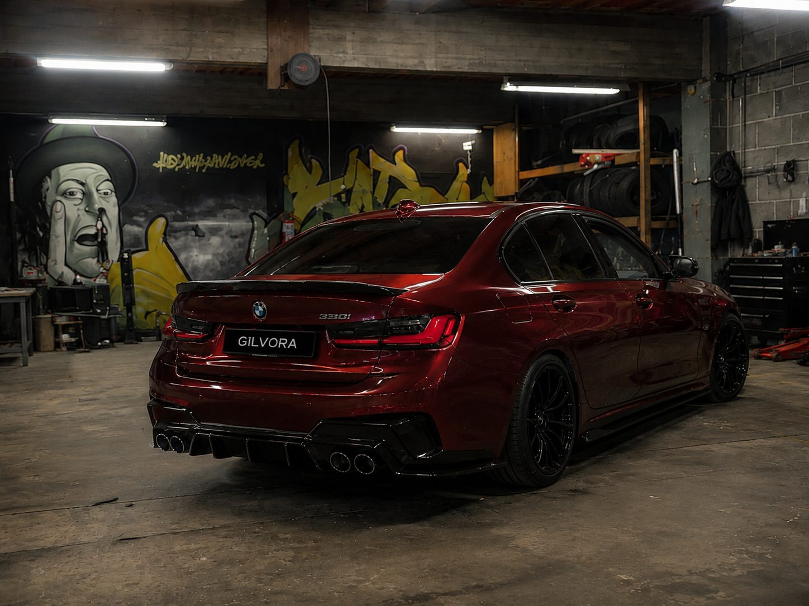

Paint Protection Film
Onzichtbare folie die je lak beschermt tegen steenslag en fijne krassen — en zichzelf herstelt in de zon.
Van afspraak tot sleutel
Vier stappen. Je weet op elk moment waar je auto staat en waarom.
Zonekeuze
Volledige voorzijde, front plus koplampen, of de hele auto. We tonen je op je eigen model waar het steengruis in de praktijk terechtkomt — dat is niet overal waar je het verwacht.
Lakvoorbereiding
Decontaminatie en, indien nodig, een correctiepolijstbeurt. Wat er onder de folie zit, zit er vijf jaar onder. Bestaande krassen leggen we eerst weg.
Aanbrengen
Per paneel, nat aangebracht, randen omgeslagen. Waar het model het toelaat demonteren we koplampen en bumperdelen zodat er geen zichtbare snede is.
Uitharden
48 uur binnen, daarna een week niet wassen. Kleine vochtwolkjes onder de folie verdampen vanzelf.
Zelden staat dit alleen
Een transformatie is een totaalplaatje. Dit zijn de ingrepen die het vaakst samen met ppf gaan.
Paint Protection Film bij Gilvora in Kaulille (Bocholt) — klanten uit heel Limburg, waaronder Hasselt, Genk, Bree, Peer, Pelt, Lommel, Beringen en Maaseik, en uit de rest van Vlaanderen. Uitsluitend op afspraak.
Klaar om te beginnen?
Stuur ons je auto, je budget en het gevoel dat je zoekt. Je krijgt een eerlijk plan terug — ook als dat betekent dat we je aanraden iets anders te doen dan je in gedachten had.